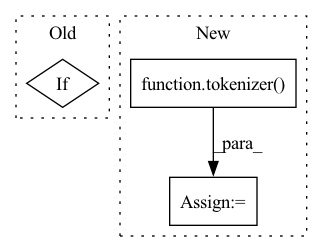

Pattern ID :34297
Before Change
:param pipelines: Different buckets to be used
:return: The correct Pipeline object (or Bucket) to route input to
if isinstance(input_schema.inputs, str):
current_seq_len = len(input_schema.inputs.split())
elif isinstance(input_schema.inputs, list):
current_seq_len = max(len(_input.split()) for _input in input_schema.inputs)After Change
:return: The correct Pipeline object (or Bucket) to route input to
tokenizer = pipelines[0].tokenizer
tokens = tokenizer(
input_schema.inputs,
add_special_tokens=True,
return_tensors="np",
padding=False,
truncation=False,
)
input_seq_len = len(tokens)
return TransformersPipeline.select_bucket_by_seq_len(input_seq_len, pipelines)
// utilities below adapted from transformersIn pattern: SUPERPATTERN
Frequency: 3
Non-data size: 3
Instances Fragment ID: 98292010
Project Name: neuralmagic/deepsparse
Commit Name: 20f708e7d739d5395b74dcbdcca1e48811d4bda1
Time: 2022-07-28
Author: rahul@neuralmagic.com
File Name: src/deepsparse/transformers/pipelines/token_classification.py
M Class Name: TokenClassificationPipeline
N Class Name: TokenClassificationPipeline
M Method Name: route_input_to_bucket(0)
N Method Name: route_input_to_bucket(0)
M Parent Class: TransformersPipeline
N Parent Class: TransformersPipeline
M File Name: src/deepsparse/transformers/pipelines/token_classification.py
N File Name: src/deepsparse/transformers/pipelines/token_classification.py
M Start Line: 408
M End Line: 421
N Start Line: 408
N End Line: 417
Before Change
source = "答案：" + title + tokenizer.eos_token + "上下文：" + source + "。" + tokenizer.eos_token + "在已知答案的前提下，问题："
if target:
target += tokenizer.eos_token
// 1. tokenize input-tokensAfter Change
)
target_input_ids_len = (np.array(target_tokenized["input_ids"]) != tokenizer.pad_token_id).sum()
source_tokenized = tokenizer(
source,
max_length=(max_source_length + max_target_length - target_input_ids_len),
padding="max_length",
truncation=True,
)
input_ids = source_tokenized["input_ids"] + target_tokenized["input_ids"]
labels = (len(input_ids) - target_input_ids_len) * [tokenizer.pad_token_id] + target_tokenized["input_ids"]
Fragment ID: 98292015
Project Name: paddlepaddle/paddlenlp
Commit Name: 0d1cba43ca0eb4984715f3c807fde7345e80ca40
Time: 2023-04-06
Author: fangzeyang0904@hotmail.com
File Name: examples/language_model/bloom/finetune_generation.py
M Class Name: AnonimousClass
N Class Name: AnonimousClass
M Method Name: convert_example(6)
N Method Name: convert_example(6)
M Parent Class:
N Parent Class:
M File Name: examples/language_model/bloom/finetune_generation.py
N File Name: examples/language_model/bloom/finetune_generation.py
M Start Line: 68
M End Line: 105
N Start Line: 73
N End Line: 114
Before Change
)
for pipeline in pipelines:
if pipeline.sequence_length > current_seq_len:
return pipeline
return pipelines[-1]
After Change
:return: The correct Pipeline object (or Bucket) to route input to
tokenizer = pipelines[0].tokenizer
tokens = tokenizer(
input_schema.sequences,
add_special_tokens=True,
return_tensors="np",
padding=False,
truncation=False,
)
input_seq_len = len(tokens)
return TransformersPipeline.select_bucket_by_seq_len(input_seq_len, pipelines)
Fragment ID: 98292017
Project Name: neuralmagic/deepsparse
Commit Name: 20f708e7d739d5395b74dcbdcca1e48811d4bda1
Time: 2022-07-28
Author: rahul@neuralmagic.com
File Name: src/deepsparse/transformers/pipelines/text_classification.py
M Class Name: TextClassificationPipeline
N Class Name: TextClassificationPipeline
M Method Name: route_input_to_bucket(0)
N Method Name: route_input_to_bucket(0)
M Parent Class: TransformersPipeline
N Parent Class: TransformersPipeline
M File Name: src/deepsparse/transformers/pipelines/text_classification.py
N File Name: src/deepsparse/transformers/pipelines/text_classification.py
M Start Line: 308
M End Line: 315
N Start Line: 308
N End Line: 317